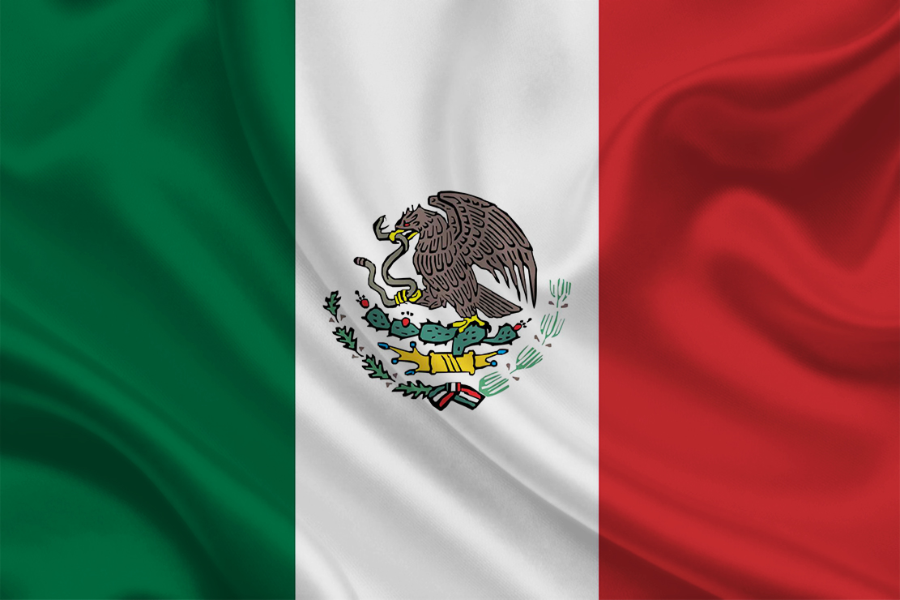
Ecos da Alma: Música e Mitologia
vamos explorar a fascinante dualidade da vida e da morte através de duas grandes expressões: a voz inconfundível da cantora Mon Laferte e a vibrante tradição do Día de los Muertos .Mon Laferte: O Bolero, a Dor e a Paixão
Com raízes chilenas e o coração entregue ao México, Mon Laferte é uma das artistas mais completas da sua geração. Ela mistura ritmos tradicionais, como o bolero, a cumbia e o mariachi, com a atitude do rock alternativo. As suas letras profundas e a sua estética dramática bebem frequentemente do folclore e da cultura popular, fazendo da sua música um lamento apaixonado e uma celebração da vida.
Día de los Muertos: A Celebração da Memória
O Día de los Muertos (Dia dos Mortos) é muito mais do que uma data no calendário. Com origens que remontam à mitologia dos povos indígenas da Mesoamérica (como os Astecas), esta tradição mexicana não encara a morte com o fim, mas sim como uma passagem natural. Em vez de luto, há festa: altares coloridos (as ofrendas ), flores de cempasúchil, caveiras de açúcar e muita música servem para guiar e receber os espíritos dos entes queridos que regressam para visitar os vivos.
Mon Laferte: A Voz da Paixão e do Folclore
Mon Laferte transforma sentimentos intensos em arte pura. Ao misturar o drama dos boleros com a sonoridade das rancheras mexicanas e a atitude do rock, a sua obra conecta-se diretamente com as raízes culturais da América Latina.
Mais quem é Mon Laferte?
Mon Laferte, cujo nome verdadeiro é Norma Monserrat Bustamante Laferte, nasceu em 2 de maio de 1983 em Viña del Mar, no Chile. Desde muito jovem, ela demonstrou um forte interesse pela música, começando a estudar canto e violão na adolescência e se apresentando em palcos locais e bares da sua cidade natal. Sua grande oportunidade nacional veio em 2003, quando participou do programa de talentos chileno Rojo Fama Contrafama , o que lhe deu projeção e permitiu que lançasse seu primeiro álbum de estúdio sob o nome artístico Monserrat Bustamante.
Buscando novos horizontes profissionais e artísticos, ela se mudou para a Cidade do México em 2007. Essa transição marcou uma fase de profunda reinvenção pessoal e artística, período em que passou a adotar o nome artístico Mon Laferte e a transitar por um som mais independente e visceral. Após enfrentar sérios problemas de saúde e um período difícil de adaptação, ela autoproduziu e lançou seu álbum Desechable em 2011, seguido por Tornasol em 2013, consolidando gradualmente sua identidade musical baseada na fusão de rock alternativo, baladas intensas e raízes latino-americanas.
O reconhecimento internacional explodiu com o lançamento de seu álbum Mon Laferte Vol. 1 em 2015, impulsionado pelo enorme sucesso da faixa "Tu Falta de Querer". A partir daí, sua carreira decolou rapidamente, rendendo-lhe turnês esgotadas por toda a América Latina, Estados Unidos e Europa, além de dezenas de indicações e vitórias no Grammy Latino. Ao longo dos anos seguintes, ela continuou a explorar sua versatilidade artística com álbuns aclamados como La Trenza , Norma e Seis , além de expandir sua expressão criativa para as artes visuais, como a pintura e a escultura. Atualmente, Mon Laferte é amplamente considerada uma das vozes mais influentes, autênticas e apaixonadas da música contemporânea da América Latina, tendo inclusive adotado a cidadania mexicana em 2022.
Álbuns e Singles
| Capa | Álbum | Data de Lançamento | Singles |
|---|---|---|---|
|
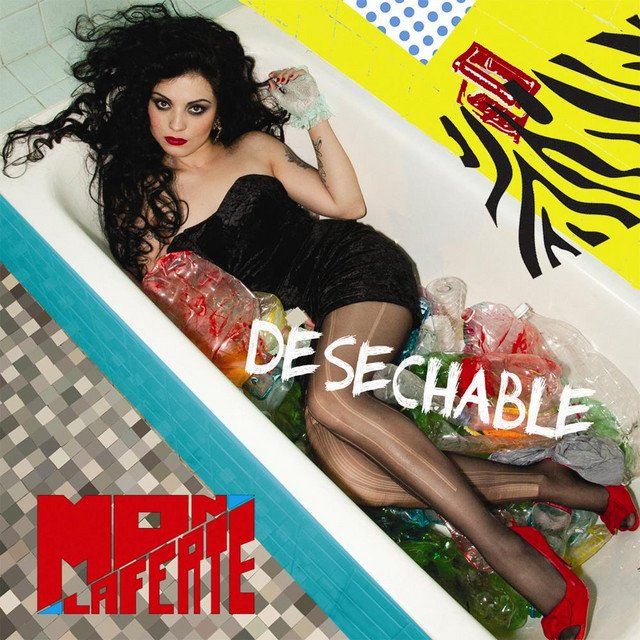 |
Desechable | 30 de junho de 2011 | Soy |
|
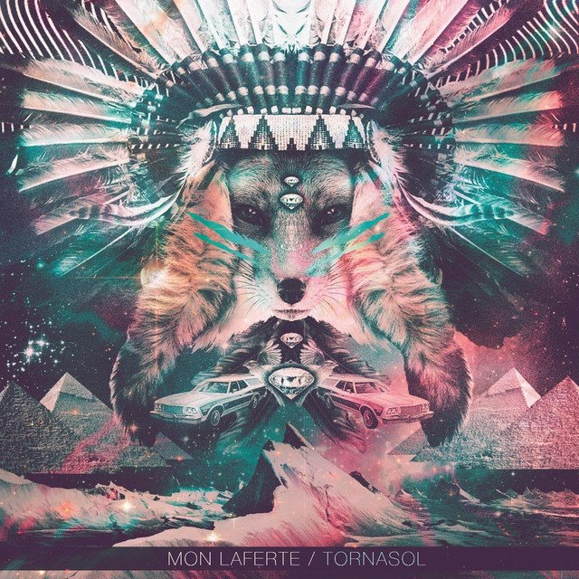 | Tornasol | 7 de janeiro de 2013 | Ángel Negro |
|
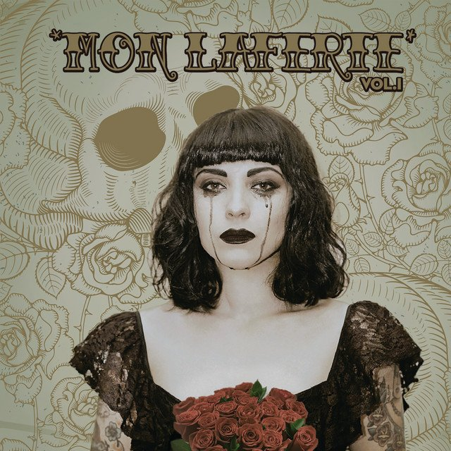 |
Mon Laferte, Vol. 1 | 31 de janeiro de 2015 | Tu Falta De Querer |
|
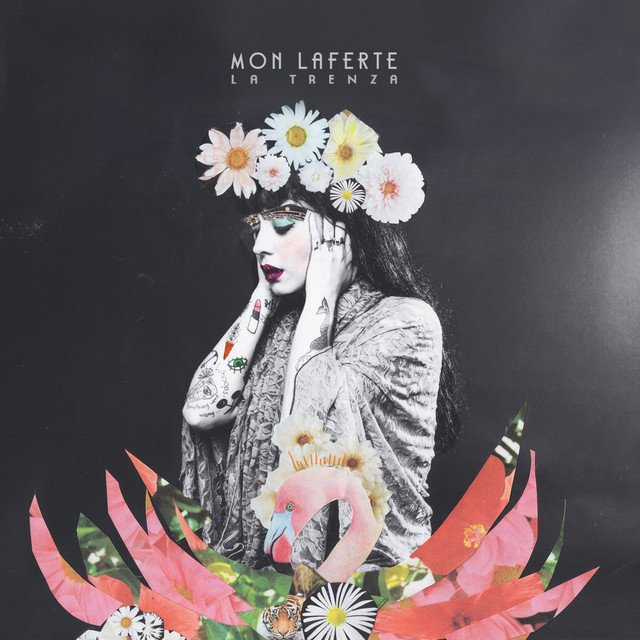 |
La Trenza | 28 de abril de 2017 | Amárrame |
| Norma | 9 de novembro de 2018 | El Beso | |
| Seis | 8 de abril de 2021 | La Mujer | |
|
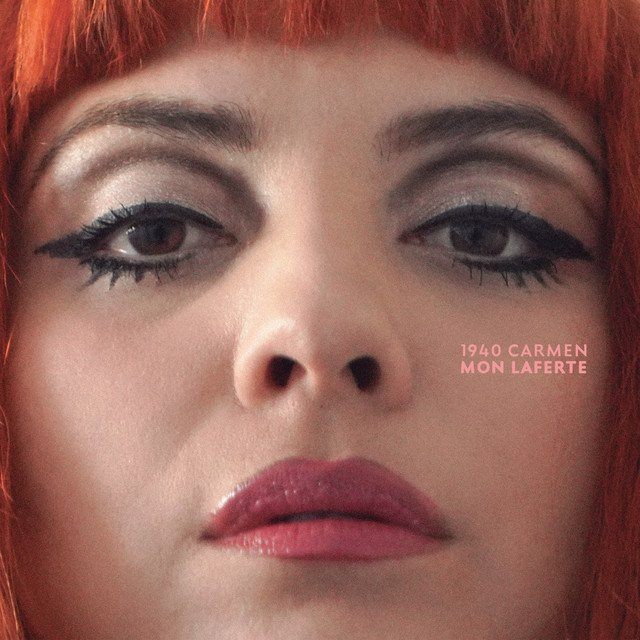 |
1940 Carmen | 29 de outubro de 2021 | Supermercado |
|
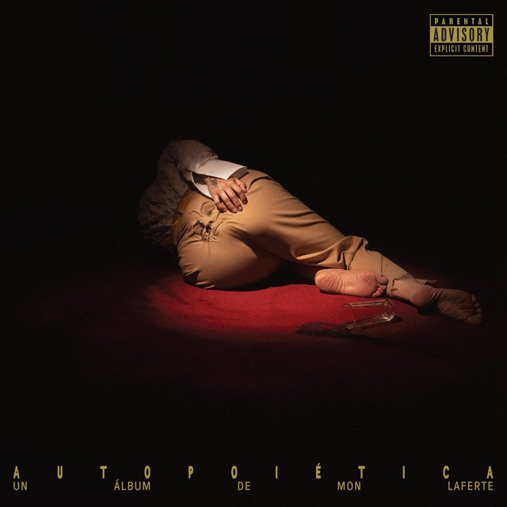 |
Autopoiética | 10 de novembro de 2023 | NO+SAD |
| Femme Fatale | 8 de novembro de 2025 | Femme Fatale | |
| Femme Fatale Vol. 2 | 12 de junho de 2026 | A Pesar De ti y De Mi |
Quando a dor da perda e a melancolia na voz de Mon Laferte abraçam a alma de sua pátria adotiva, o México, somos transportados para a mais sagrada das celebrações: o Día de los Muertos . É o luto transformado em altar, onde a morte não apaga o amor, apenas o veste de cores e o eterniza em canções.
Día de los Muertos
Como é Comemorado o Día de los Muertos
O Día de los Muertos (Dia dos Mortos), comemorado principalmente nos dias 1º e 2 de novembro no México, é uma das celebrações mais tradicionais e ricas culturalmente da América Latina. Diferente do Halloween, é uma festividade de origem pré-hispânica misturada com elementos católicos, cujo objetivo principal é honrar e celebrar a memória dos entes queridos que já partiram , acreditando que suas almas visitam o mundo dos vivos nesses dias.
| Tópico / Subtópico | O que é / Explicação | Imagem |
|---|---|---|
| 1. Altar e Oferendas: Fotografias | Colocadas no topo do altar para homenagear e identificar o parente falecido que está sendo recebido. |
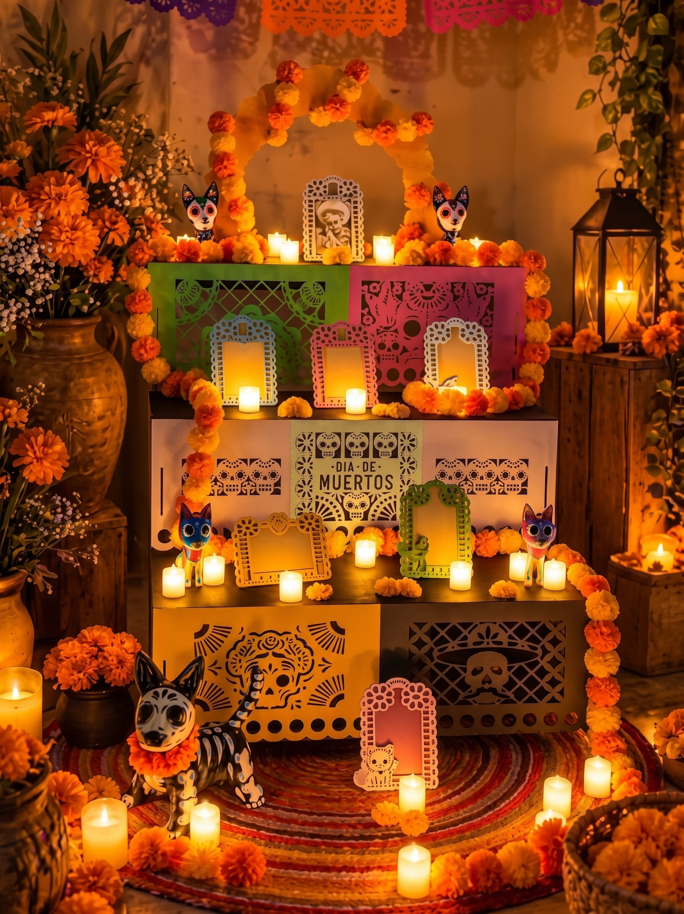 |
| 1. Altar e Oferendas: Comidas e Bebidas | Pratos favoritos que o ente querido gostava em vida para que ele possa saborear a essência dos alimentos. |
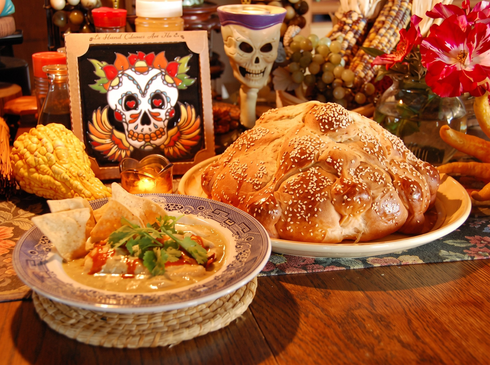 |
| 1. Altar e Oferendas: Água e Sal | A água serve para saciar a sede da alma após a longa viagem, e o sal simboliza a pureza e protege o espírito. |
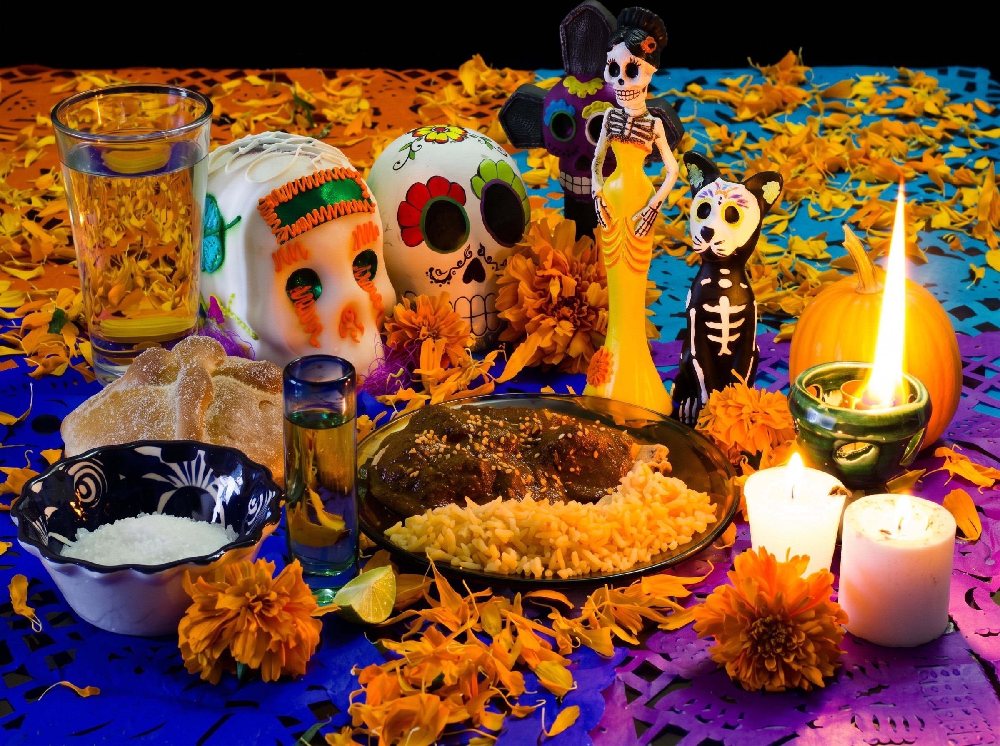 |
| 2. Flor de Cempasúchil e Papel Picado | A flor de cempasúchil (cravo-de-defunto), com seu aroma forte e cor laranja vibrante, cria trilhas para guiar as almas até os altares. O papel picado, feito com bandeirinhas coloridas recortadas, representa o elemento vento e a alegria contagiante da festividade. |
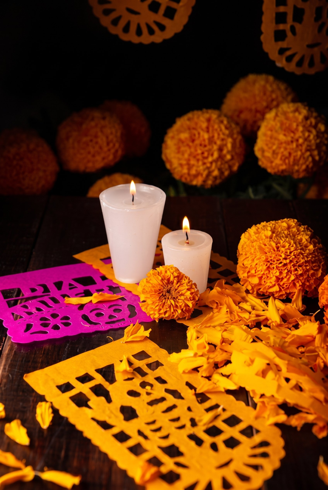 |
Animações Inspiradas no Dia de los Muertos
O Dia de los Muertos (Dia dos Mortos), tradicional celebração mexicana que honra e lembra os entes queridos que já se foram, tem inspirado obras de animação belíssimas e emocionantes.
1. Viva: A Vida é uma Festa ( Coco , 2017)
Estúdio: Pixar / Disney
Sobre a obra: É, sem dúvida, a obra mais famosa a retratar o tema. O filme acompanha Miguel, um menino mexicano que sonha em ser músico, mas cuja família proíbe qualquer música devido a uma antiga história de abandono. Ao tocar o violão de seu falecido ídolo no Dia dos Mortos, ele é acidentalmente transportado para a Terra dos Mortos.
Por que assistir: O filme é uma carta de amor à cultura mexicana, retratando com precisão e respeito elementos fundamentais da festividade, como os altares de oferendas (ofrendas), as pétalas de cempasúchil (flor-de-maravilha) que guiam os espíritos, o papel picado e a crença de que os mortos só morrem de verdade quando são esquecidos.
2. Festa no Céu ( The Book of Life , 2014)
Estúdio: 20th Century Fox / Reel FX (Produzido por Guillermo del Toro)
Sobre a obra: Com um visual único que lembra bonecos de madeira artesanais, o filme segue Manolo, um jovem dividido entre cumprir as expectativas de sua família e seguir seu coração (a música). Ele embarca em uma jornada fantástica por mundos espirituais — a Terra dos Lembrados e a Terra dos Esquecidos — para resgatar o seu amor. *(Nota: No Brasil, foi lançado nos cinemas com o título "Festa no Céu").*
Por que assistir: Co-produzido pelo aclamado cineasta mexicano Guillermo del Toro, o filme mergulha profundamente na mitologia do folclore mexicano e na visão festiva e colorida que o México tem sobre a morte, misturando romance, aventura e muita música.
3. Día de los Muertos (Curta-metragem, 2013)
Estúdio: USote / Ringling College of Art and Design
Sobre a obra: Um curta-metragem independente aclamado que conta a história de uma garotinha triste que visita o altar de sua mãe falecida. Ao tocar uma caveira decorada (calaverita), ela é transportada para um mundo mágico repleto de esqueletos animados que celebram a vida e a morte com dança e alegria.
Por que assistir: É uma obra curta (com cerca de 3 minutos), sensível e visualmente deslumbrante, perfeita para entender a essência reconfortante da data de forma poética.
Elementos culturais comuns retratados nestas animações:
- As Ofrendas: Altares montados nas casas com fotos, comidas favoritas e velas para receber os espíritos.
- As Catrinas e Calaveras: Esqueletos elegantemente vestidos e coloridos, que tiram o peso sombrio da morte e celebram a memória de quem partiu.
- O Xoloitzcuintle: O cão pelado mexicano, frequentemente retratado como o guia espiritual que acompanha os mortos em sua jornada (como o Dante em Viva ).